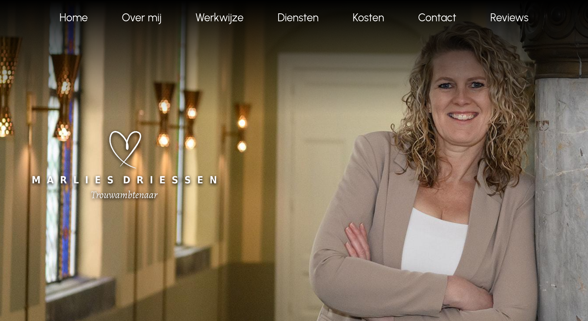
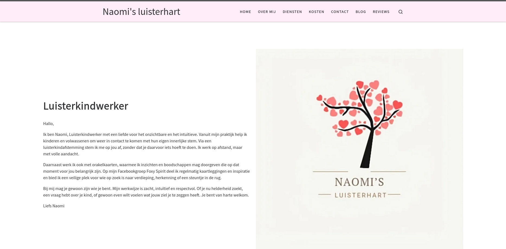

Projects
Website - Trouwambtenaar Marlies Driessen
I created a warm and elegant website for trouwambtenaar Marlies Driessen, focused on clear information, personal storytelling, and an inviting design that reflects her unique approach to wedding ceremonies.
Website - Naomi's luisterhart
For Naomi's Luisterhart, I built a calm and heartfelt WordPress website that highlights her listening practice, services, and story. The design focuses on clarity, warmth, and easy navigation.